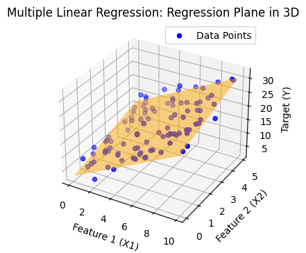
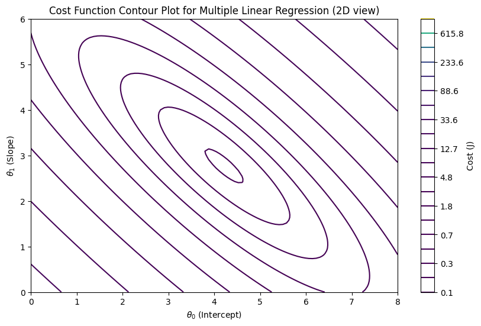

Multiple Linear Regression#
In Simple Linear Regression, we model the relationship between one independent variable \(X\) and a dependent variable \(Y\).
In Multiple Linear Regression, we extend this idea to two or more independent variables.
The equation is:
Where:
\(Y\) = dependent variable (target)
\(\beta_0\) = intercept (value of \(Y\) when all \(X\)s are zero)
\(\beta_1, \beta_2, ..., \beta_n\) = coefficients for each feature
\(X_1, X_2, ..., X_n\) = independent variables (features)
\(\epsilon\) = error term (noise that the model cannot explain)
Example Intuition#
Suppose we want to predict house price based on:
Size of the house (\(X_1\))
Number of bedrooms (\(X_2\))
Distance from city center (\(X_3\))
Equation could look like:
Interpretation:
For every extra unit of size, price increases by $300.
For every extra bedroom, price increases by $10,000.
For every km away from the city, price decreases by $2,000.
Assumptions of Multiple Linear Regression#
MLR works best when these assumptions hold:
Linearity → relationship between predictors and target is linear.
Independence → features are independent of each other (low multicollinearity).
Homoscedasticity → variance of residuals is constant.
Normality → residuals (errors) should be normally distributed.
Cost Function#
The goal is to minimize the error between predictions and actual values. We use Mean Squared Error (MSE):
Where:
\(m\) = number of data points
\(\hat{y}^{(i)}\) = predicted value
\(y^{(i)}\) = actual value
Finding the Best Fit#
We use Gradient Descent or Normal Equation to estimate coefficients (\(\beta\) values).
Best fit line (or hyperplane in higher dimensions) minimizes the cost function.
Visualization#
Since more than 2 features are hard to plot directly, let’s see some cases:
Simple Regression (1 feature → line):#
Multiple Regression with 2 features (2D plane → hyperplane in 3D):#
The regression output becomes a plane instead of a line.
import numpy as np
import matplotlib.pyplot as plt
from mpl_toolkits.mplot3d import Axes3D
from sklearn.linear_model import LinearRegression
# Generate synthetic data
np.random.seed(42)
X1 = np.random.rand(100) * 10 # Feature 1
X2 = np.random.rand(100) * 5 # Feature 2
Y = 3 + 2*X1 + 1.5*X2 + np.random.randn(100) * 2 # Target with some noise
# Prepare features for regression
X = np.column_stack((X1, X2))
# Fit multiple linear regression
model = LinearRegression()
model.fit(X, Y)
Y_pred = model.predict(X)
# Create a mesh grid for plotting regression plane
x1_range = np.linspace(X1.min(), X1.max(), 20)
x2_range = np.linspace(X2.min(), X2.max(), 20)
x1_grid, x2_grid = np.meshgrid(x1_range, x2_range)
y_grid = model.intercept_ + model.coef_[0]*x1_grid + model.coef_[1]*x2_grid
# Plot 3D scatter and regression plane
plt.figure(figsize=(5, 4))
# ax = fig.add_subplot(111, projection='3d')
ax = plt.axes(projection='3d')
# Scatter points
ax.scatter(X1, X2, Y, color='blue', label="Data Points")
# Regression plane
ax.plot_surface(x1_grid, x2_grid, y_grid, color='orange', alpha=0.5)
# Labels
ax.set_xlabel("Feature 1 (X1)")
ax.set_ylabel("Feature 2 (X2)")
ax.set_zlabel("Target (Y)")
ax.set_title("Multiple Linear Regression: Regression Plane in 3D")
ax.legend()
plt.show()

import numpy as np
import matplotlib.pyplot as plt
# Define cost function for multiple linear regression (2 features for visualization)
def cost_function(theta0, theta1, X, y):
m = len(y)
predictions = theta0 + theta1 * X[:, 1] # considering only one feature for visualization
cost = (1/(2*m)) * np.sum((predictions - y) ** 2)
return cost
# Generate synthetic dataset (house size vs price)
np.random.seed(42)
X = 2 * np.random.rand(100, 1)
y = 4 + 3 * X[:, 0] + np.random.randn(100)
# Add intercept term
X_b = np.c_[np.ones((100, 1)), X]
# Create a grid of theta0, theta1 values
theta0_vals = np.linspace(0, 8, 100)
theta1_vals = np.linspace(0, 6, 100)
J_vals = np.zeros((len(theta0_vals), len(theta1_vals)))
# Compute cost for each theta0, theta1
for i, t0 in enumerate(theta0_vals):
for j, t1 in enumerate(theta1_vals):
J_vals[i, j] = cost_function(t0, t1, X_b, y)
# Transpose for correct orientation in contour plot
J_vals = J_vals.T
# Plot cost function contours
plt.figure(figsize=(10, 6))
plt.contour(theta0_vals, theta1_vals, J_vals, levels=np.logspace(-1, 3, 20), cmap="viridis")
plt.xlabel(r"$\theta_0$ (Intercept)")
plt.ylabel(r"$\theta_1$ (Slope)")
plt.title("Cost Function Contour Plot for Multiple Linear Regression (2D view)")
plt.colorbar(label="Cost (J)")
plt.show()

What is a Contour Plot#
A contour plot is a 2D plot that shows how a 3D surface looks when you “slice it horizontally” at different heights (values).
Imagine you have a mountain 🌄.
If you cut the mountain at different altitudes and look from above, you will see rings (levels).
Each ring represents points that have the same height.
That’s exactly what a contour plot does!
Components of a Contour Plot#
X-axis & Y-axis → independent variables (e.g., parameters θ₀ and θ₁ in regression).
Contour lines (level curves) → each line represents a constant value of a function (say cost J(θ)).
Colors or shading → darker/lighter colors may show whether values are higher or lower.
Example in Statistics / ML#
In Linear Regression, we often visualize the cost function:
This is a 3D surface shaped like a bowl (convex).
Instead of plotting the 3D bowl, we use contour plots.
The innermost contour (center) represents the global minimum (lowest cost).
Gradient descent moves step by step across the contours towards the center.
Analogy#
Think of a topographic map 🗺️ (used in hiking):
The lines show elevation levels.
Closer lines = steep slope.
Wider lines = flat surface.
The deepest valley point = global minimum.
In machine learning:
θ₀ and θ₁ are the “coordinates” (like longitude & latitude).
J(θ) (cost) is the “elevation”.
Gradient descent is like rolling a ball downhill until it reaches the lowest valley.